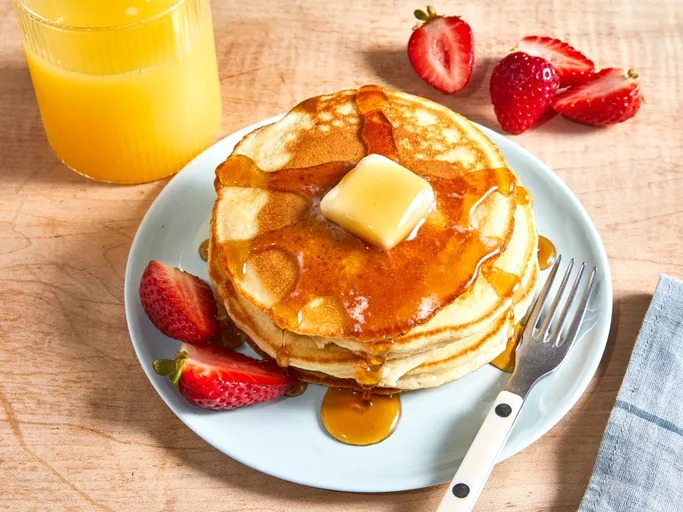

Easy Pancakes

This "Easy Pancakes" recipe is a beloved, quick staple designed to be
whipped up in minutes using basic pantry staples like flour, milk, and
eggs. It is a versatile and foolproof "master recipe" that produces light,
fluffy, golden-brown pancakes without the need for boxed mixes.
Ingredients
- 1 cup all-purpose flour
- 2 tablespoons white sugar
- 2 teaspoons baking powder
- ½ teaspoon salt, or to taste
- 1 cup milk
- 2 tablespoons vegetable oil
- 1 large egg, beaten
Steps
- Gather the ingredients.
-
Combine flour, sugar, baking powder, and salt in a large bowl; make a
well in the center. Pour in milk, oil, and egg; mix until smooth.
-
Heat a lightly oiled griddle or frying pan over medium-high heat. Pour
or scoop about ¼ cup batter per pancake onto the griddle; cook until
bubbles form and the edges are dry, 1 to 2 minutes. Flip; cook until
browned on the other side. Repeat with remaining batter.
- Serve hot and enjoy!
Home